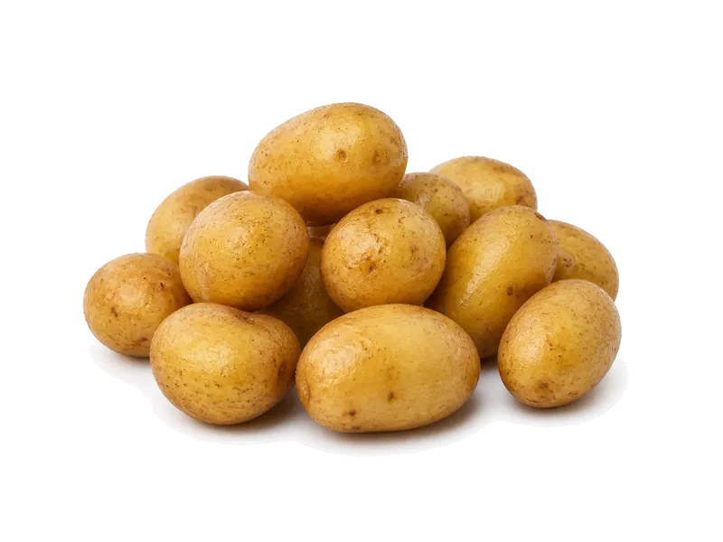

Warzywa
Ziemniaki młode (gotowane)
Ziemniaki młode (gotowane): 1.8 g białka, 71 kcal, 16.3 g węglowodanów i 0.1 g tłuszczu na 100 g. Kategoria: Warzywa.
Kalorie71 kcalna 100 g
Białko / proteiny1.8 g
Węglowodany16.3 g
Tłuszcz0.1 g
Cena (szac.)~0,30 złza 100 g
Ceny zaktualizowano: sierpień 2026 (szacunek — ceny w popularnych supermarketach)
Porcja: porcja (100g)
| Kalorie | 71 kcal |
|---|---|
| Białko | 1.8 g |
| Węglowodany | 16.3 g |
| Tłuszcz | 0.1 g |
| Cena (szac.) | ~0,30 zł |
Szczegółowe składniki odżywcze na 100 g
| Wartość energetyczna (kalorie) | 71 kcal |
|---|---|
| Białko (proteiny) | 1.8 g |
| Węglowodany | 16.3 g |
| Tłuszcz | 0.1 g |
| Tłuszcze nasycone | 0 g |
| Tłuszcze nienasycone | 0.1 g |
| Witaminy i minerały (skrót) | Witamina C, Witamina B6, Potas |
| Współczynnik kcal / 1 g białka | 39.4 |
| Cena produktu (szac. za 100 g) | ~0,30 zł |
| Cena za 100 g białka (szac.) | ~16,67 zł |
Witaminy i minerały na 100 g
Ilość w 100 g produktu oraz orientacyjny % dziennego zapotrzebowania (RDA) dla dorosłej osoby. Żelazo wg normy dla kobiet; sód jako % limitu. Wartości typowe (USDA / tabele żywieniowe / etykiety) — mogą się różnić między markami.
-
Witamina C 19.7 mg
-
Witamina E 0.05 mg
-
Witamina K 2 µg
-
Witamina B1 (tiamina) 0.08 mg
-
Witamina B2 (ryboflawina) 0.03 mg
-
Witamina B3 (niacyna) 1.05 mg
-
Witamina B5 0.3 mg
-
Witamina B6 0.3 mg
-
Witamina B9 (foliany) 16 µg
-
Cholina 12 mg
-
Wapń 12 mg
-
Żelazo 0.8 mg
-
Magnez 23 mg
-
Fosfor 57 mg
-
Potas 425 mg
-
Cynk 0.3 mg
-
Selen 0.4 µg
-
Miedź 110 µg
-
Mangan 0.15 mg
-
Sód 6 mg